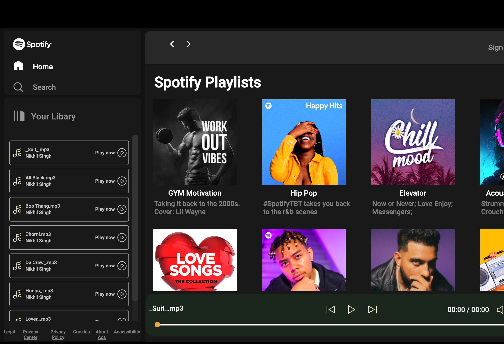

My Works

3D Animation Site
Developed a visually engaging 3D interactive website using Tailwind CSS, GSAP, and Locomotive Scroll, featuring smooth animations and scroll-triggered effects. This project highlights expertise in front-end development and the integration of advanced libraries for immersive web experiences.

Spotify
Developed a fully responsive Spotify clone website using HTML, CSS, and JavaScript. The project replicates the core features of Spotify, including dynamic song loading and offline access, while ensuring a seamless user experience across all devices. This project demonstrates strong functional web applications.